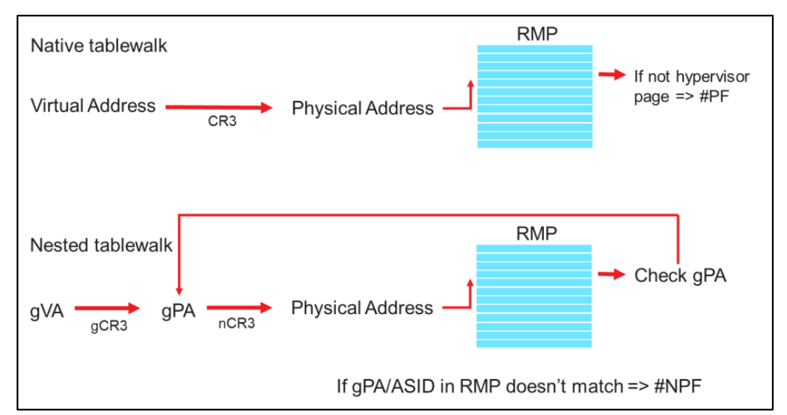
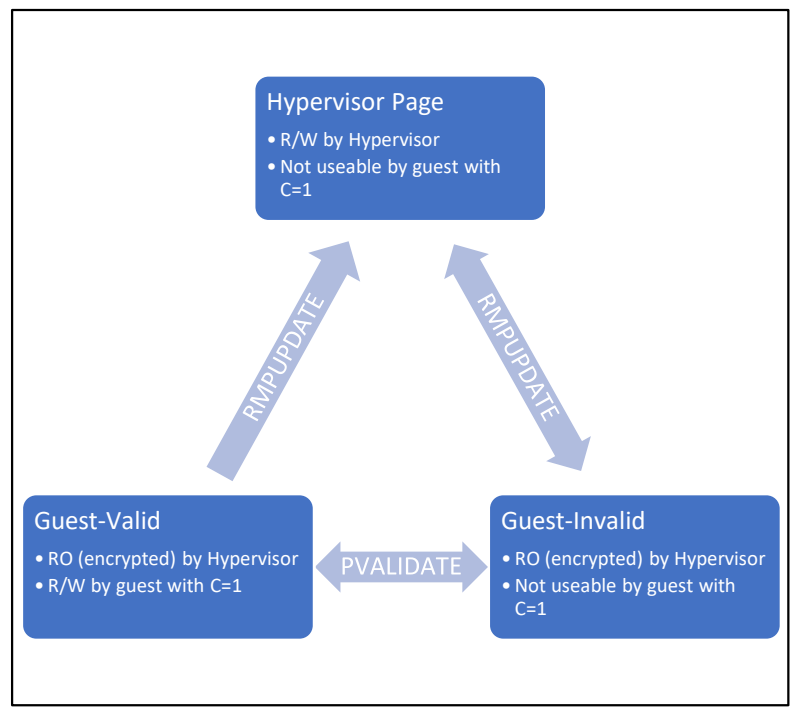
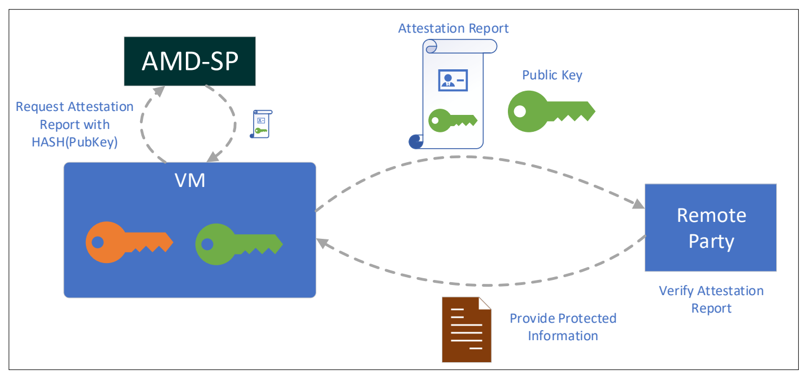
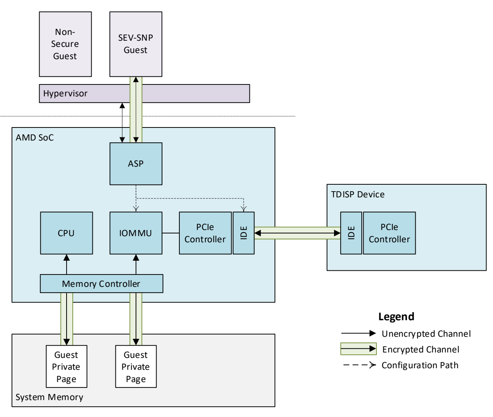

从 SEV 到可信 I/O
SVM 运行虚拟机，内存控制器使用 VM 专属加密密钥。AMD Secure Processor（AMD-SP，也称 ASP 或 PSP）管理密钥和 Guest 生命周期。SNP 在宿主管理的嵌套映射上增加硬件检查。
| 技术 | 新增机制 | 阅读重点 |
|---|---|---|
| SEV | 用每 VM 密钥保护 Guest 私有内存。 | ASID 关联 Guest 密钥。C-bit 区分加密的 Guest 映射和共享映射。 |
| SEV-ES | 将 VM 退出时的 vCPU 寄存器状态保存在加密的 VMSA 中。 | Guest 通过 GHCB 显式共享 VMM 需要的操作数。 |
| SEV-SNP | 加入反向映射表、页面验证和 Guest 可主动请求的签名报告。 | CPU 检查页面所有权和映射。验证者评估 Guest 和平台 TCB。 |
| SEV-TIO | 在支持的平台上为 SNP 增加可信设备分配。 | TDISP、SPDM、PCIe IDE 与 IOMMU 协同工作。 |
SEV-SNP 信任边界

跟踪一次私有页访问与 VM 退出
Guest 页表将 GVA 转换为 GPA，VMM 管理的 NPT 将 GPA 转换为系统物理地址。CPU 以系统物理地址查询 RMP，核对所有权、预期 GPA 和相关访问权限。
地址转换后的 RMP 检查

宿主分配与 Guest 验证

SEV-ES 和 SNP 保护虚拟机状态保存区（VMSA）。例如 CPUID 被拦截且需要宿主模拟时，#VC 处理程序只将所需字段写入共享 GHCB，执行 VMGEXIT，再校验返回值。
VMPL0–3 是 SNP Guest 内部的权限层级，VMPL0 权限最高。可选的 Secure VM Service Module（SVSM）可运行在 VMPL0，向较低权限的 Guest OS 提供 vTPM 等服务。RMP 权限与普通页表检查共同生效。
从 AMD-SP 固件到 Guest 启动
平台固件认证、Guest 启动度量、报告证书验证分别检查不同的输入。
SNP 启动与度量
| 信任层 | 证据及含义 |
|---|---|
| 平台固件 | AMD-SP 的 Boot ROM 是 AMD 固件认证的信任根。AMD Platform Secure Boot 可将宿主固件信任链延伸到 OEM BIOS。SNP 报告提供相关 TCB 版本，供验证者制定策略。 AMD 安全启动 ↗ |
| Guest 启动 | MEASUREMENT 是对已度量的初始镜像及页面元数据计算的 SHA-384 启动摘要。可选的签名 ID Block 可绑定预期摘要与 Guest 身份。验证者核对预期启动镜像和策略。 |
| Guest OS 与运行期 | Guest UEFI Secure Boot 可对后续启动阶段执行签名策略。若要验证后续度量，需要另有度量启动和证据绑定方案，例如将 vTPM 事件日志和 Quote 绑定到已证明的 Guest。 |
| 报告签名者 | 验证者以 AMD Root Key（ARK）为根，按 VCEK 或 VLEK 选择正确的中间证书与背书证书。验签确认报告字节的真实性，部署策略决定是否接受证据。 |
请求 SNP 报告并在远端验证
Guest 通过受 VMPCK 保护的消息向 AMD-SP 发送 MSG_REPORT_REQ，由 Hypervisor 转发。固件按平台配置使用 VCEK 或已预配的 VLEK 直接签署报告。
Guest 公钥绑定与远程验证

| 检查项 | 验证者检查什么 |
|---|---|
| 签名与证书链 | 读取签名密钥类型。VCEK 走 ARK → ASK → VCEK，并按证书规范匹配芯片 ID 与 reported TCB。VLEK 走 ARK → ASVK → VLEK，并核对 TCB 声明。检查撤销状态并验证报告的 ECDSA P-384 签名。 |
| REPORT_DATA | 重算应用协议定义的绑定值，纳入验证者的新鲜 nonce。在下发秘密时，同时绑定 Guest 临时公钥或通道握手记录。该字段为 64 字节。 |
| MEASUREMENT / POLICY / VMPL | 将启动摘要与预期镜像比较。检查 DEBUG、是否允许迁移代理等策略、生成报告的 VMPL 及最低可接受 TCB 版本。 |
| HOST_DATA / REPORT_ID_MA | HOST_DATA 由宿主在启动时设置，可与独立取得的预期值比较。绑定迁移代理时，REPORT_ID_MA 标识该代理实例。若部署依赖代理，需检查代理自己的证据和策略。 |
Linux 提供 /dev/sev-guest 和 SNP_GET_REPORT。扩展请求还可取得宿主提供的证书。应将这些证书视为输入，并验证到独立信任的 AMD 根。仅在通道密钥和证据通过策略后下发秘密。
用 SEV-TIO 分配可信 PCIe 功能
普通 SNP 设备通过共享缓冲区做 DMA。SEV-TIO 将信任边界扩展到 Guest 接受的设备接口，允许设备直接 DMA 到获准的私有页。
AMD SEV-TIO 系统架构

| 机制 | 职责 |
|---|---|
| TDISP / TDI | PCI-SIG 定义每个 TEE 设备接口的分配与状态，例如一个 SR-IOV VF。设备端 DSM 执行接口侧规则。 |
| SPDM / DOE | AMD-SP 承担宿主 TEE Security Manager（TSM）的角色，通过与 DSM 的 SPDM 安全会话处理身份、度量和控制消息。VMM 可通过 PCIe DOE 邮箱转发消息。 |
| Selective IDE | 保护所配置端点之间的 PCIe 事务，为选定的流提供机密性、完整性与抗重放。 |
| AMD IOMMU / RMP | 安全设备表项（SDTE）与 RMP 检查将可信 DMA 限制在获准的 Guest 映射。Guest 使用设备前验证所分配的 MMIO 范围。 |
设备与 TDI 生命周期

阅读 TDISP 的 CONFIG_UNLOCKED、CONFIG_LOCKED、RUN 和 ERROR 状态时，也要跟踪 Guest 何时接受 TDI。例如 ABI 0.91 允许 TIO_TDI_BIND 先将接口置为 RUN，Guest 随后才接受该接口。Guest 仍需用 TIO_MSG_MMIO_VALIDATE_REQ 验证 MMIO，再通过 TIO_MSG_SDTE_WRITE_REQ 授权私有内存 DMA。AMD 将基于 TDISP 的可信 I/O 列在 EPYC 9005 功能中，并在文档索引列出 TIO ABI 0.92。部署需核对具体 CPU、平台与设备固件，以及宿主和 Guest 驱动。
跟踪迁移代理与 Guest 上下文
Migration Agent（MA）可作为独立 SNP VM，在启动时与待迁移 Guest 关联。Guest 策略控制是否允许关联。AMD-SP 执行导出和导入请求的授权检查。
通过迁移代理迁移 SNP Guest
- 在宿主协助的换出路径中，源端用
SNP_PAGE_SWAP_OUT换出私有页和元数据，离线加密密钥（OEK）保护这些页面镜像。MSG_EXPORT_REQ按固件导出规则取得 Guest 上下文。 - 迁移方案认证对端，经受保护通道传输导出的上下文。目的端创建上下文，通过
MSG_IMPORT_REQ导入并恢复页面。ABI 还定义了由 Guest 协助的路径，使用 Incoming Migration Image 与 absorb 请求。 - 迁移后，依赖方可向目的端请求新证据，重新核对 TCB、身份和代理策略，再恢复密钥下发。热迁移、vTPM 和直通设备能否迁移，取决于实际软件栈和迁移策略。
AMD SEV-SNP 与 Intel TDX 逐项对照
Intel 一栏可跳到对应章节。每行对照两套架构中承担相近职责的机制。
| 职责 | AMD SEV-SNP | Intel TDX |
|---|---|---|
| 平台信任根 | AMD-SP Boot ROM、签名固件与 AMD TCB 版本 | SEAM Loader 与 SEAM root 中经度量的 TDX 模块 ↗ |
| 私有内存与页面接受 | ASID / C-bit, NPT + RMP, RMPUPDATE / PVALIDATE | KeyID, Secure EPT + PAMT, TDG.MEM.PAGE.ACCEPT ↗ |
| CPU 状态及宿主接口 | VMSA, #VC, GHCB / VMGEXIT | TDVPS, TDCALL / SEAMCALL, TDG.VP.VMCALL ↗ |
| 构建期度量 | SNP_LAUNCH_*, MEASUREMENT | TDH.MR.*, MRTD and guest runtime RTMRs ↗ |
| 证据与签名链 | AMD-SP 以 VCEK 或 VLEK 签署 SNP 报告 | TDREPORT → DCAP TDQE 签署 Quote；Intel PCK 证书链认证平台 ↗ |
| 可信边界内的服务 | SVSM 位于 VM 内部的 VMPL0。迁移代理可作为独立 SNP VM。 | Service TD 是绑定到目标 TD 的独立 TD，例如 MigTD。 ↗ |
| 可信设备分配 | SEV-TIO, AMD-SP as TSM, AMD IOMMU + RMP | TDX Connect, TDX module as TSM, trusted VT-d ↗ |
| 迁移 | SNP MA 与固件上下文导出/导入，传输由具体平台实现 | MigTD 评估策略并交换会话密钥，TDX 模块导出/导入受保护状态。 ↗ |
读规范并检查一份 SNP 报告
先读 AMD 架构与 Linux 宿主、Guest 两侧接口，再按需查看证书与可信 I/O 规范。
在支持 SNP 的 Guest 上做两个检查。用新鲜挑战值请求报告，验证签名和启动度量。随后保持报告不变，只改验证者预期的挑战值，观察报告签名依旧有效，但应用层绑定检查失败。